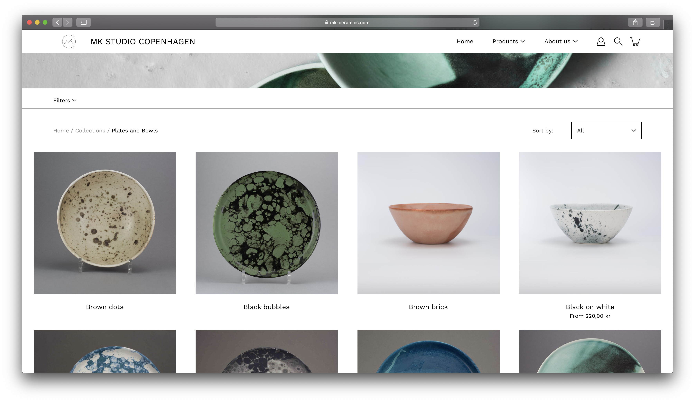
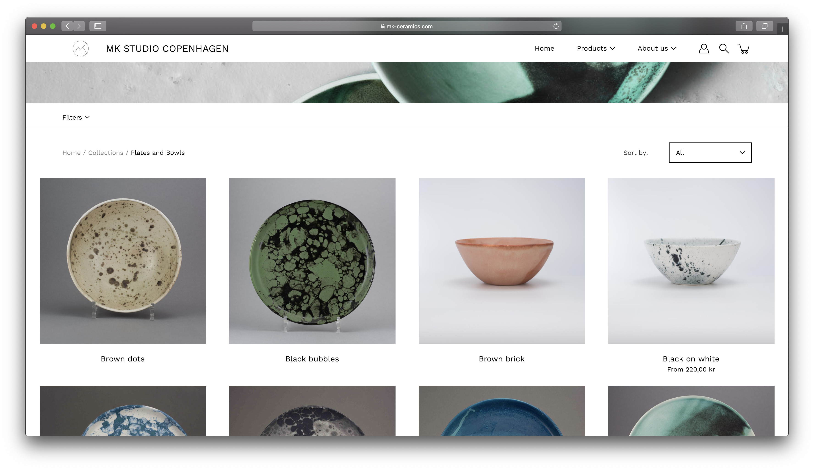
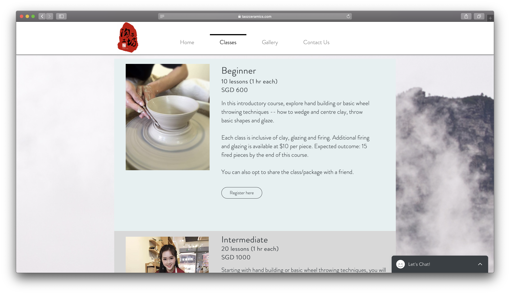
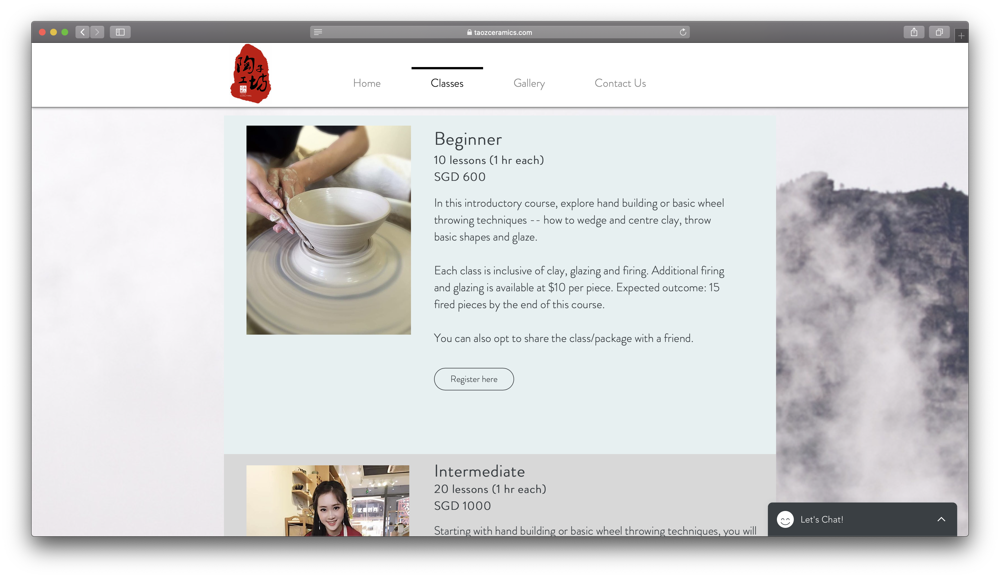

Final project proposal
Introduction
Red Dirt Studio
Small pottery studio selling handmade creations from local artists and offering ceramics courses to the public. Part teaching studio, part contemporary ceramics gallery. Located in Monterey Bay, California.
Target audience
Millenials or others who may be furnishing a home for the first time and want to purchase timeless, quality ceramic pieces and/or learn a new, fun skill. Older customers typically buy singlular specialty items while younger customers buy more sets of items. Younger customers tend to be the ones booking studio time and classes and are more active online so they are most likely to be repeat visitors to the website to view class schedules and news updates.
Our clientele is either looking to purchase homeware or have an experience by throwing clay in our studio. Customers who purchase our ceramics are typically looking for lasting, quality products with a modern design and want to find what they are looking for quickly. People who book studio time or enroll in our courses primarily want to enjoy their time in the studio and then perhaps get a unique, personal creation out of it that is easy to come back and pick up after it has been fired in the kiln.
Comparative analysis
MK Studio Copenhagen
 

Taoz Ceramics
 

Pot Studio


Website content
Home
Welcome to Red Dirt Studio, part contemporary ceramics gallery, part teaching studio. Join our local artists in guided pottery classes or purchase handmade goods crafted by our resident artists.
[Shelf with ceramic creations from classes displayed.]
Shop Ceramics
Browse handcrafted works from local artists by category. Most pieces are available in sets.
- Plates
- Bowls
- Cups/Mugs
- Other
[Gallery of ceramic pieces for sale.]
Courses
Whether you're a lifelong sculptor or have never touched a potter's wheel, we have a course at your level. In whichever class you choose, our resident local artists will guide you through creating great-looking and practical pottery for your home.
We are pleased to offer in-person courses at limited capacity beginning April 4, 2021. Register today to reserve your spot!
-
[Beginner level clay piece.]
Beginner Wheel
Monday 9am-11:30am
-
[Intermediate level clay piece.]
Intermediate Wheel
Sunday 2pm-4:30pm
-
[Advanced level clay piece.]
Advanced Wheel
Monday 7pm-9:30pm
[Person sculpting clay on a pottery wheel in the studio.]
Open Studio Time
Reserve time in our studio with open access to all materials, including clay, glazes, and on-tap advice from our resident artists. This is the perfect time to practice your technique or flex your creative muscle.
[Gallery of images of people working in the studio and ceramics creations.]
Events
Looking for a unique place for your next birthday party or team meeting? Our studio feautes a private party space for up to 16 guests. Participants will be guided through a private course of their choice by one of our resident artists and will have full access to the studio space for 2 hours.
We are currently unable to offer this due to the pandemic but check back soon for more info on opening up!
[Group of people in the studio together.]
About Us
We are a collective of sculptors and ceramics artists in the Monterey Bay area who love helping others create. We are passionate about pottery and love spending time in the studio. Come join us for a guided course or get to know us during open studio hours.
[Map of studio location.]
We are located at 164 Forest Ave, Pacific Grove, CA 93950, just across the street from the Pacific Grove Museum of Natural History.